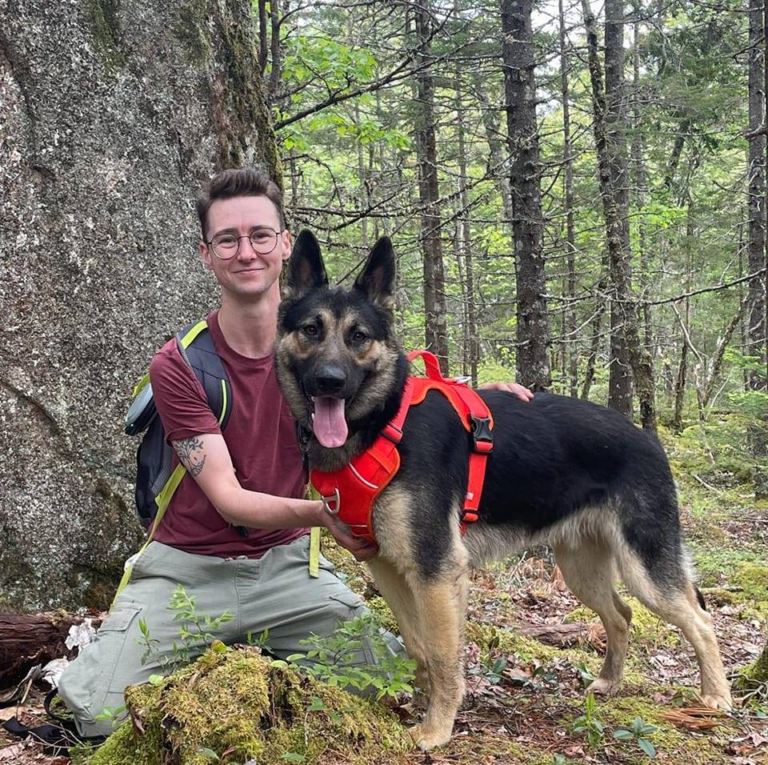

Hello, my name is Andy.
I'm an automation developer in Nova Scotia.
About Me
Open My Resume ↗▯
I am a test automation developer (mostly), with a strong background in data analytics, web development, GIS, software QA, and customer success. I’m ready to take on a new role where I can channel my energy and advance my skills in software engineering.
Keep reading...
My formal education (B.Sc.) is in biology, where I focused on population genetics and completed an honours thesis analyzing the movement patterns of the Sable Island horses using positional data in MySQL and RStudio. After spending a year working in a university genetics lab I was also co-author on a paper assessing a new short DNA sequence for use in sexing sperm whales.
Working at a local dental technology startup post-university gave me the chance to explore a wide range of directions, and I quickly gravitated towards data analytics and software development. I learned basic web development, created our company processes for software QA, ran complex data reports in MySQL, wrote a suite of tests for our GraphQL API using TypeScript, and created a tool using Python to automate our incoming data review process.
In 2022 I completed ~75% of a graduate program in Remote Sensing and GIS at the NSCC Centre of Geographic Sciences (COGS), but withdrew in the last couple of months due to a family emergency. Instead I moved on to pursue an opportunity with LogiSense as a Test Automation Developer, where I gained valuable experience writing clean and efficient code in a fast-paced role using Selenium, behave with Gherkin/cucumber, and Jenkins for CI/CD.
See less...
Skills
Workflow automation using Python
Selenium for test automation
BDD using behave and Gherkin
Jest and Pytest
API testing using Postman
SQL, GraphQL, R and RStudio
HTML, CSS, Bootstrap
Javascript, Typescript, Java
Agile methodology and scrum framework
Git and source control
Algorithms and data structures
Projects
ECCE Esri App Challenge
Fully responsive website with embedded maps, originally used to showcase the FloodRouteFinder GIS appication - a guide to flood resilient infrastructure.
Baking measurements conversion tool
Simple Bootstrap website with a (form-validated) JavaScript calculator. Specify the ingredient to see relevant measurement units and make your conversion.
Demo website for a local business
Custom-built (HTML and CSS) website with logo and service information as an example for a small attic remediation business.